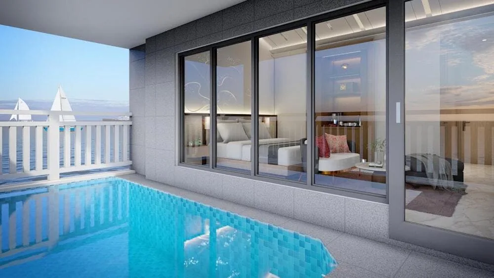

Lexis Hibiscus 2 is the one opportunity GRR Malaysia currently features — researched, vetted, and presented with licensed agency Summerfield. Developer-guaranteed 8% p.a. for years 1–3; profit-sharing thereafter.
Guaranteed rate applies to years 1–3 under the developer's official rental programme. Years 4–15 operate on a profit-sharing basis and are not guaranteed. Terms and conditions apply.
Most property marketing starts with what's for sale. We start with what survives scrutiny — developer track record, legal standing, demand fundamentals, and transparency of terms. Lexis Hibiscus 2 is currently the only project we feature, because it's the only one that has passed.
The timing is unusual: a weak ringgit against SGD, USD, and GBP, and entry prices far below regional capitals. The project is unusual too — its developer has completed 15 projects, sold 100% of them, and holds two Guinness World Records for the sister resort next door.
A note on fit: this opportunity suits investors comfortable with an entry from RM860,000 and a 10–15 year horizon. If you're looking for a short-term flip, this isn't the right fit — and we'd rather say so now than in a meeting.
| Feature | Lexis Hibiscus 2 | Typical Overseas Condo | Local Buy-to-Let |
|---|---|---|---|
| Entry price | From RM860,000 | Higher + currency risk | Lower entry, lower yield |
| Years 1–3 return | 8% p.a. guaranteed (developer-backed) | Rarely guaranteed | Not guaranteed |
| Years 4–15 return | Profit-sharing, projected avg. 11.5% gross | Market-dependent | Market-dependent |
| Management | Fully managed by resort operator | Usually self-managed | Self-managed |
| Owner perks | 10 free nights/year | None | None |
Only the Years 1–3 figures are guaranteed. All other return figures are the developer's projections, not promises. Verify current terms with Summerfield before making any decision.
GRR Malaysia is a research and marketing partner to licensed agency Summerfield Property. We earn a commission on completed sales — disclosed openly, at no extra cost to you. How we work →

Every unit is a private-pool villa over the Straits of Malacca — an hour from Kuala Lumpur, managed end-to-end as a resort income asset. The sister resort next door generated RM115.6 million in revenue in 2024.
See the Full ROI BreakdownYes, subject to minimum price thresholds that vary by state, and separate rules apply to Malaysia My Second Home (MM2H) participants. Confirm the current threshold for Negeri Sembilan with Summerfield before committing.
Lexis Hibiscus 2 is the next phase of the Lexis Hibiscus Port Dickson development, known for its private-pool water villa concept — a resort-style property positioned as a tourism-driven income asset rather than a standard residential condo.
Yes, for the first 3 years — the developer guarantees an 8% per annum rental return (paid quarterly), or buyers can opt for 6.5% per annum net in advance during construction with the developer covering outgoings. From Year 4 to Year 15, returns switch to a profit-sharing model (75% of net operating profit to participating buyers), which is projection-based rather than guaranteed.
No — enquiries and initial documentation can typically be handled remotely, though we recommend a briefing at Pavilion KL, or a virtual briefing, before committing.
Based on the developer's own 15-year projection model, the principal is forecast to break even in approximately 10 years or more, assuming projected occupancy and room rates are achieved. This is a forecast, not a guarantee.
We research, vet, and present property investment opportunities in Malaysia on behalf of licensed property agencies such as Summerfield. We are not the developer and not a licensed agency ourselves — read more on our About page.
See the scale model, the full numbers, and the documentation — then decide in your own time.